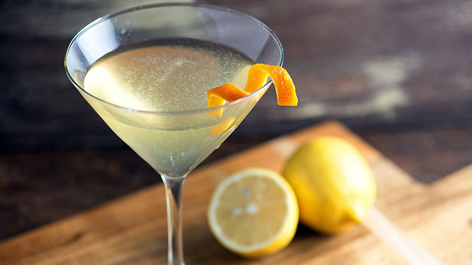

Corpse reviver No.2 Recipe

A refreshing and classive sour gin cocktail with zesty and fruity tastes from the lemon and orange
They’re irresistibly strong, fruity and refreshing, yet simple cocktail.
Ingredients
- Ice cubes
- 30 ml of gin of choice
- 30 ml of Triple sec (orange liquier)
- 30 ml of Dry Vermouth
- 30 ml of lemon juice
- 15 ml of simple sugar syrup
- dash of Absinthe
- Orange twist for garnish
- Cocktail shaker
Steps
- Add your Gin, Triple sec, Dry Vermouth, lemon juice, sugar syrup and ice into a cocktail shaker
- Shake for 20 seconds until frost forms around the shakrer
- Add a dash of Absinthe to a chilled martini glass and swirl to coat the side and rim of the glass
- Strain the contents inside the shaker into the glass
- Stir add your orange twist garnish to add some presentation to the drink
- Enjoy!